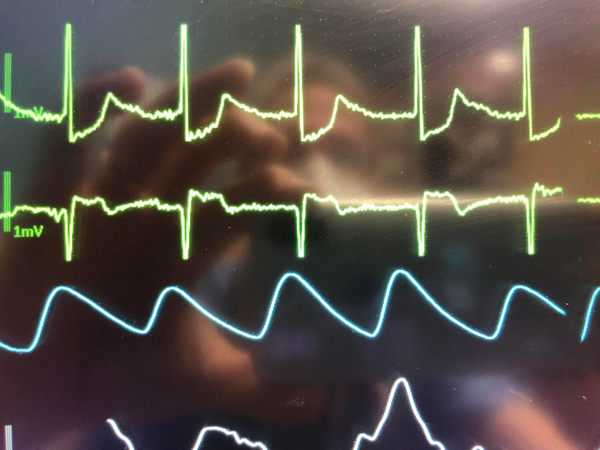
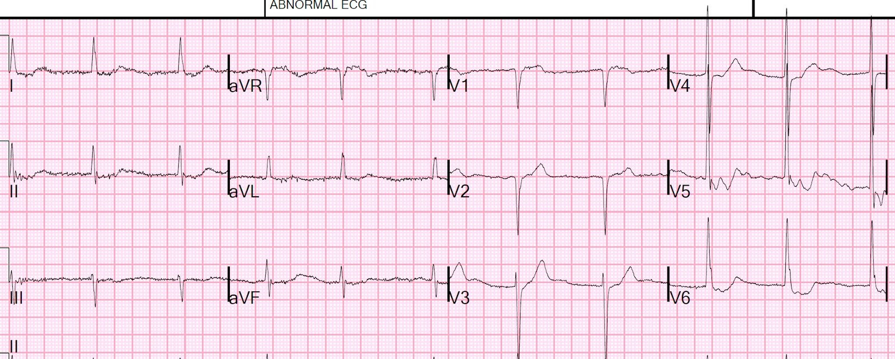
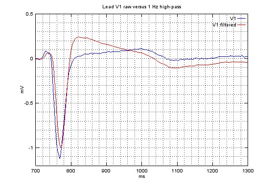
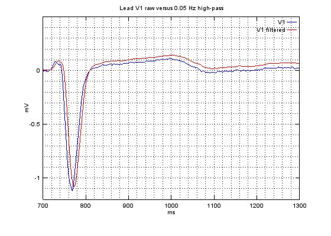

20/04/2022 — Bạn nghĩ gì khi thấy ST chênh lên hoặc ST chênh xuống trên monitor? (Bài học về bộ lọc thông cao từ Christopher Watford)
Bản dịch tiếng Việt của bài "What do you think when you see ST elevation or ST depression on the monitor? (A lesson on High Pass filtering from Christopher Watford)" – Dr. Smith’s ECG Blog. Giữ nguyên toàn bộ 6 hình ảnh của bản gốc.
Bài này có phần giải thích của Christopher Watford, người không chỉ là một nhân viên cấp cứu ngoài viện có kỹ năng đọc điện tâm đồ tuyệt vời, mà còn là một phù thủy về toán học và máy tính.
@ECGWatford
https://twitter.com/ecgwatford (tài khoản Twitter của Christopher Watford)
Bệnh nhân này đang được gắn monitor theo dõi, và monitor hiển thị như sau:


Bản ghi phía trên tương tự V5
Bản ghi phía dưới tương tự V1
Bạn nghĩ gì?
Ở đây ST chênh xuống khoảng 30% chiều cao sóng R. ST chênh lên khoảng 30% độ sâu sóng S
Tôi muốn cho các bác sĩ nội trú thấy điều này tương quan kém thế nào với điện tâm đồ 12 chuyển đạo, nên chúng tôi đã ghi một điện tâm đồ cùng lúc:


STE ở V1 nhỏ hơn 10% sóng S
STD ở V5 hơi khó đo do nhiễu, nhưng cứ cho là 3 mm, trong bối cảnh sóng R cao 32 mm, tức khoảng 10%
Các bất thường ST của bệnh nhân này là nền sẵn có, do tác dụng của digoxin (Digoxin effect).
Bài học cần rút ra là monitor thường phóng đại rất nhiều STE và STD. Điều này liên quan đến việc lọc điện tử, và rất nhiều vấn đề kỹ thuật mà tôi thật sự không hiểu.
Nhưng Christopher Watford hiểu điều này rất rõ, nên tôi nhờ Christopher giải thích:
Lời giải thích liên quan đến “lọc thông cao (high pass filtering) đối với các ‘tần số'”. Đây KHÔNG phải tần số lấy mẫu (sampling frequency) (chẳng hạn, điện tâm đồ 12 chuyển đạo đo điện thế 500 lần mỗi giây (500 Hz), đó là tần số lấy mẫu.
Đây là một loại tần số khác:
Từ Christopher:
“Tần số là một thuộc tính của tín hiệu mà bạn ghi được. Điện tâm đồ
là một tín hiệu rất phức tạp. Chúng ta có thể phân tách một tín hiệu phức tạp thành
nhiều tín hiệu đơn giản (sóng hình sin). Mỗi tín hiệu đơn giản có một tần số,
biên độ và pha. Đây là định nghĩa sơ lược về phân tích Fourier (Fourier Analysis).
“Lọc theo tần số có thể hình dung như việc trừ bớt các tín hiệu đơn giản này
dựa trên một quy tắc: tần số của chúng. Sau đó monitor hiển thị cho bạn
“tổng” của các tín hiệu còn lại.
“Hãy giả sử một điện tâm đồ là một phương trình như: 2x + 5y + z, và x, y, z là các
tần số. Giờ giả sử bộ lọc thông cao của bạn đã trừ 2x khỏi
điện tâm đồ. Bạn sẽ còn lại 5y + z. Đó là những gì bạn sẽ thấy.
“Xét ví dụ rất thô sơ đó, bạn sẽ nói bộ lọc là _hữu ích_ nếu
phép trừ đó chỉ loại bỏ những phần không mong muốn của tín hiệu. Nhưng
nếu trong 2x đó, 1.5x lại là đoạn ST của bạn thì sao?
“Hoặc nếu bộ lọc không chỉ trừ 2x mà còn nhân
toàn bộ phương trình với 0.9 rồi cộng thêm 0.25x thì sao? Như vậy gần với thực tế của
lọc theo thời gian thực hơn. Bạn đang đưa vào một mức méo dạng nào đó do
phép toán không hoàn hảo.”
“Về chuyện lọc và điện tâm đồ, về cơ bản là bạn càng
lọc nhiều thì càng thấy nhiều méo dạng. Có bốn loại bộ lọc
trên các monitor tim: bộ lọc thông cao để loại bỏ nhiễu tần số
thấp, bộ lọc thông thấp để loại bỏ nhiễu tần số cao, bộ lọc chặn dải (notch
filter) để loại bỏ một tần số cụ thể như điện lưới xoay chiều (A/C), và
triệt nhiễu đồng pha (common mode rejection) qua điện cực RL để xử lý nhiễu một chiều (D/C).
“Bộ lọc lý tưởng cho monitor tim là bộ lọc giữ lại các thành phần
bạn quan tâm và loại bỏ các nhiễu bạn không quan tâm.
“Đoạn ST của chúng ta là tín hiệu tần số thấp, giống như trôi đường nền.
Nhiễu do cơ và do cử động thường có tần số cao. Mọi thứ
khác có xu hướng nằm ở khoảng giữa (P, QRS, T). Vì vậy, bằng cách khoanh vùng tần số
trong khoảng 0.5-40hz, chúng ta có thể quan sát rất tốt nhịp tim, vì mọi thành phần quan trọng đều nằm trong khoảng đó, và mọi nhiễu không mong muốn đều nằm ngoài khoảng đó.
“Tần số thường gặp của các thành phần quan trọng trên điện tâm đồ:
- Tần số tim: 0.67 – 5 Hz (tức là 40 – 300 nhịp/phút)
- Sóng P: 0.67 – 5 Hz
- QRS: 10 – 50 Hz
- Sóng T: 1 – 7 Hz
- Điện thế tần số cao: 100 – 500 Hz
“Tần số thường gặp của nhiễu và tạp âm trên điện tâm đồ:
- Cơ: 5 – 50 Hz
- Hô hấp: 0.12 – 0.5 Hz (ví dụ 8 – 30 nhịp thở/phút)
- Điện bên ngoài: 50 hoặc 60 Hz (điện lưới xoay chiều, hay tần số điện lưới)
- Điện khác: thường >10 Hz (máy kích thích cơ, từ trường mạnh, máy tạo nhịp có theo dõi trở kháng)
“Điều thú vị là chuyện gì xảy ra với các tần số mà chúng ta lọc bỏ theo thời gian thực.
Việc lọc nói chung hoạt động dựa trên nguyên lý phân tách một sóng thành
các thành phần cấu tạo của nó (phân tích Fourier). Bạn có thể hình dung điện tâm đồ là
tổng của một loạt sóng “thông thường” có tần số, biên độ
và pha khác nhau. Bộ lọc thông thấp, vốn loại bỏ nhiễu tần số cao, có xu hướng
làm suy giảm biên độ của điện tâm đồ.
Tuy nhiên, bộ lọc thông cao lại có xu hướng gây ra lệch pha (phase shift).
Tệ hơn nữa, sự lệch pha này có thể xảy ra trong một dải quanh tần số của bộ lọc
(tức là nó ảnh hưởng đến các hài kế cận). Dải tần số
bị ảnh hưởng này tương đối rộng và tác động lên đoạn ST một cách
đáng kể. Lọc điện tâm đồ theo thời gian thực là nơi bạn thấy điều này, vì đã có
các kỹ thuật xử lý hậu kỳ cho điện tâm đồ 12 chuyển đạo không mắc phải những
hạn chế này.
Nếu nhiễu do cơ và QRS nằm trong cùng một dải tần số, bạn có thể thắc mắc tại sao chúng ta không thấy méo dạng như vậy. Ngay từ đầu QRS đã có biên độ cao hơn nhiều so với nhiễu do cơ, nên nó chịu được mức
suy giảm biên độ lớn hơn nhiều trước khi mất đi các thành phần có ý nghĩa của tín hiệu đó. Ngược
lại, đoạn ST hiếm khi có biên độ cao, do đó sẽ
dễ dàng bị ảnh hưởng bởi việc lọc.
Tôi đã mô phỏng việc áp dụng một bộ lọc thông cao 1 Hz cho một chuyển đạo điện tâm đồ bằng GNU
Octave, và méo dạng ở đoạn ST khá rõ rệt:


So sánh với cùng điện tâm đồ đó khi dùng bộ lọc thông cao 0.05 Hz, như bạn
thấy trên điện tâm đồ 12 chuyển đạo, thì méo dạng ở đoạn ST là
tối thiểu (<0.1 mV):


Gác các đồ thị sang một bên, bạn chỉ cần chọn các bộ lọc phù hợp với
dải tần số bạn quan tâm. Monitor dùng để theo dõi nhịp,
còn điện tâm đồ 12 chuyển đạo dùng để theo dõi chi tiết hoạt động điện. Và
ngay cả khi đó, bạn cũng cần hiểu rõ thiết bị của mình. Nhiều monitor của đội cấp cứu ngoài viện (EMS) ghi
điện tâm đồ 12 chuyển đạo ở 0.05-40Hz để có bản ghi sạch hơn. Nếu bạn đang tìm
sóng epsilon hoặc sóng J kín đáo, bộ lọc thông thấp 40Hz là quá
mạnh tay. Có lẽ bạn cần 100 hoặc thậm chí 150 Hz!
Ngày nay nhiều thiết bị có các chức năng đặc biệt để giải quyết vấn đề này. Một số
có chế độ lọc đặc biệt để theo dõi đoạn ST, số khác cho phép bạn
thay đổi tần số theo dõi khi cần. Vì vậy, tôi không nói rằng bạn
không thể phát hiện ST chênh lên cấp tính trên monitor tim, nhưng bạn không biết
những gì đã bị bỏ đi! Rất khó để nhìn một điện tâm đồ đã qua lọc mà
đoán xem cái gì đã thay đổi hoặc bị mất, có lẽ là một trò vui để khoe trong tiệc nhưng không phải
điều tôi dám đặt cược nếu không có điện tâm đồ 12 chuyển đạo.
tài liệu tham khảo từ bài viết gốc của tôi trên ems12lead đã được lưu trữ: https://web.archive.org/web/20210506153459/https://www.ems12lead.com/2014/03/10/understanding-ecg-filtering/ (Hiểu về lọc điện tâm đồ)

===================================
Bình luận của KEN GRAUER, MD (20/4/2019):
===================================
Định kỳ đưa ra các ví dụ lâm sàng cho thấy độ lệch đoạn ST trên monitor điện tâm đồ có thể gây hiểu lầm đến mức nào là điều tốt. Dù ST chênh xuống ở chuyển đạo V5 (và ST chênh lên ở chuyển đạo V1) trên dải theo dõi ở trên đáng lo ngại đến đâu — Dr. Smith đã chỉ ra rằng nó không có thật! Dù còn xa mới là chuyên gia trong lĩnh vực này — tôi đã ôn lại những điểm thiết yếu về Cài đặt Bộ lọc trong Bình luận của tôi ở cuối trang của bài ngày 4 tháng Ba năm 2019 trên Dr. Smith’s ECG Blog. Dr. Smith truyền đạt “Câu trả lời Ngắn” ở trên — để cho rõ ràng, tôi nhắc lại ở đây:
- Độ lệch đoạn ST (chênh lên hoặc chênh xuống) không được thể hiện một cách đáng tin cậy trên monitor điện tâm đồ. Chúng có thể “có thật” hoặc không.
- Nếu bạn thấy bất kỳ điều gì có thể đáng lo ngại trên monitor (tức là ST chênh lên hoặc chênh xuống đáng kể) — thì hãy ngay lập tức ghi một điện tâm đồ 12 chuyển đạo đầy đủ. Đó là cách duy nhất để biết có thật sự có độ lệch đoạn ST hay không.
- Khả năng một hình dạng ST-T bất thường trên monitor phản ánh thiếu máu cục bộ cấp hoặc nhồi máu sẽ cao hơn NẾU — bạn đã theo dõi bệnh nhân trong một khoảng thời gian, và không hề thay đổi vị trí đặt điện cực, rồi bạn đột nhiên nhận thấy một khác biệt về hình dạng sóng ST-T.
- Bất kể có theo dõi liên tục hay không — cách duy nhất để biết độ lệch đoạn ST bạn thấy có “thật” hay không — là ngay lập tức ghi điện tâm đồ 12 chuyển đạo.
- Về “Câu trả lời Dài hơn” — phần bàn luận TUYỆT VỜI của Christopher Watford (ở trên) đóng vai trò như một đề cương khóa học thu nhỏ về chủ đề này! Tôi sẽ thường xuyên tham chiếu lại những hướng dẫn xuất sắc mà anh ấy đưa ra.
- Về một “Câu trả lời Trung bình” dễ tiếp cận — Xin xem Bình luận của tôi trong bài ngày 4 tháng Ba năm 2019 trên Dr. Smith’s Blog.